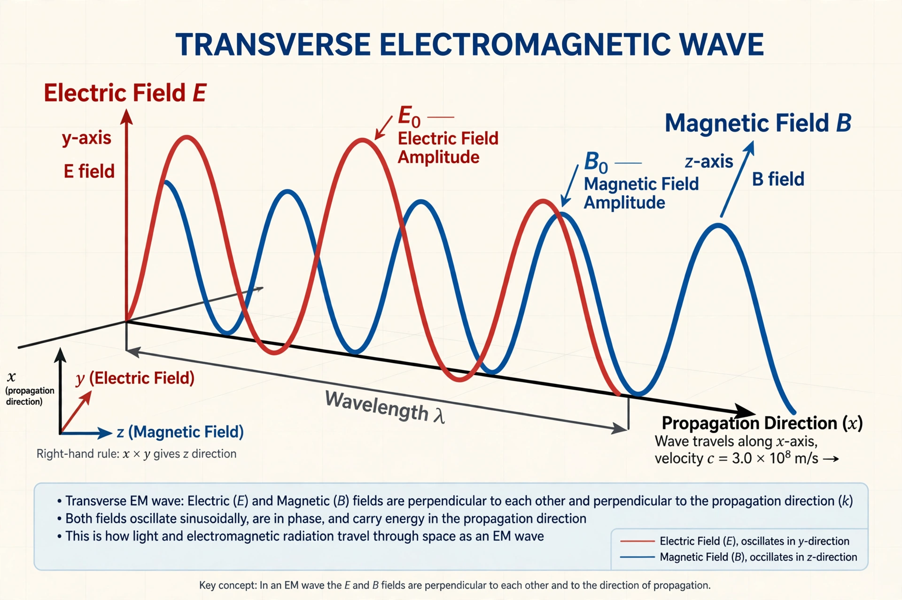

Maxwell's equations, or Maxwell–Heaviside equations, are a set of coupled partial differential equations that, together with the Lorentz force law, form the foundation of classical electromagnetism, classical optics, and electric circuits. The equations provide a mathematical model for electric, optical, and radio technologies, such as power generation, electric motors, wireless communication, lenses, and radar. They describe how electric and magnetic fields are generated by charges, currents, and changes of the fields.

The equations are named after the physicist James Clerk Maxwell, who, in 1861 and 1862, published an early form of the equations that included the Lorentz force law. Maxwell first used the equations to propose that light is an electromagnetic phenomenon. The modern form of the equations in their most common formulation is credited to Oliver Heaviside.
Maxwell's equations may be combined to demonstrate how fluctuations in electromagnetic fields (waves) propagate at a constant speed in vacuum, c (299,792,458 m/s), known as the speed of light. The four equations, in differential form in vacuum, are:
| Name | Differential form | Meaning |
|---|---|---|
| Gauss's law | ∇ · E = ρ/ε0 | Electric charges produce electric fields |
| Gauss's law for magnetism | ∇ · B = 0 | There are no magnetic monopoles |
| Faraday's law of induction | ∇ × E = −∂B/∂t | Changing magnetic fields produce electric fields |
| Ampère–Maxwell law | ∇ × B = μ0J + μ0ε0 ∂E/∂t | Currents and changing electric fields produce magnetic fields |
Here E is the electric field, B the magnetic field, ρ the electric charge density, J the current density, ε0 the permittivity of free space, and μ0 the permeability of free space.
Maxwell's most important contribution was the addition of the displacement current term to Ampère's circuital law, in his 1861 paper On Physical Lines of Force. He derived the electromagnetic wave equation in his 1865 paper A Dynamical Theory of the Electromagnetic Field, showing that the speed of the waves matched the known speed of light and concluding that light itself is an electromagnetic disturbance. In the 1880s Heinrich Hertz experimentally confirmed the existence of electromagnetic waves.
The equations can be written in integral form, differential form, in macroscopic media using the auxiliary fields D and H, in Gaussian (cgs) units, and in the covariant tensor formulation of special relativity, in which the electric and magnetic fields are unified into the electromagnetic field tensor.
Maxwell's equations underpin essentially all of electrical engineering and telecommunications: generators, motors, antennas, waveguides, and the analysis of circuits at high frequencies. They are also central to optics, plasma physics, and astrophysics. In the quantum regime they are superseded by quantum electrodynamics, but they remain the classical limit of the theory.